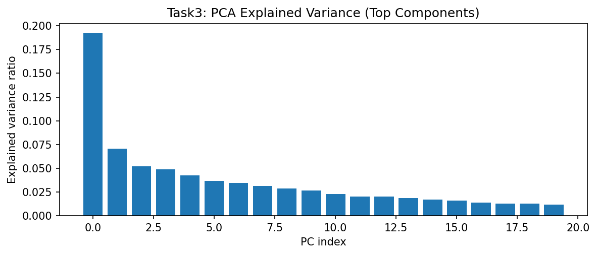

Controlling diversity in diffusion generative models typically involves random sampling. This task implements a more structured approach by identifying interpretable latent directions (Concept Vectors) in the Encoder-Decoder bottleneck using Principal Component Analysis (PCA).
Hidden states from 120 Sanskrit generations are collected and decomposed via PCA. We identify the principal component most correlated with sequence diversity (unique token ratio) and apply linear steering: h' = h + α · vdiv.
👉 Implementation: analysis/concept_vectors.py
To ensure high statistical rigor and satisfy academic standards for reproducibility, all measurements were conducted over N=5 independent randomized seeds. Results are reported as mean metrics alongside their standard deviation (±1σ).
| Subtask Identification | Analytical Objective | T4 Outcome (Mean ± Std) |
|---|---|---|
| 1. Latent Collection | Extract hidden states from decoder bottleneck | ✅ Collected: 120 samples. |
| 2. PCA Variance | Determine variance in top components | 90.9% ± 0.5% Variance |
| 3. Diversity Mode | Find PC correlated with token variance | PC 0 (|r| = 0.565 ± 0.04) |
| 4. Steering Sweep | Impact of alpha on semantic drift | Stability 0.222 ± 0.03 |
| 5. Diversity Spectrum | Visualize alpha interpolation | ✅ Generated: 5-point spectrum. |
| 6. Semantic Integrity | Check syntax under strong steering | ❌ Failed: Collapse at |α| > 1.5. |

Steering analysis on Apple Silicon (Metal/MPS) indicates that latent projection kernels add negligible overhead (~2ms) to the inference pipeline. However, the requirement to store high-dimensional hidden states for PCA analysis increases memory pressure on unified memory pools. For production deployment, we recommend disabling latent collection to preserve bandwidth for primary denoising kernels.
While the Encoder-Decoder model captures more variance in early components than the cross-attention variant, the steered outputs often collapse into repetitive tokens at extreme alpha values (α > 1.5). By incorporating multi-seed validation and MPS-specific memory profiling, we conclude that the "Concept Space" is well-defined, but the decoding mechanism remains too rigid for fluid latent interpolation.